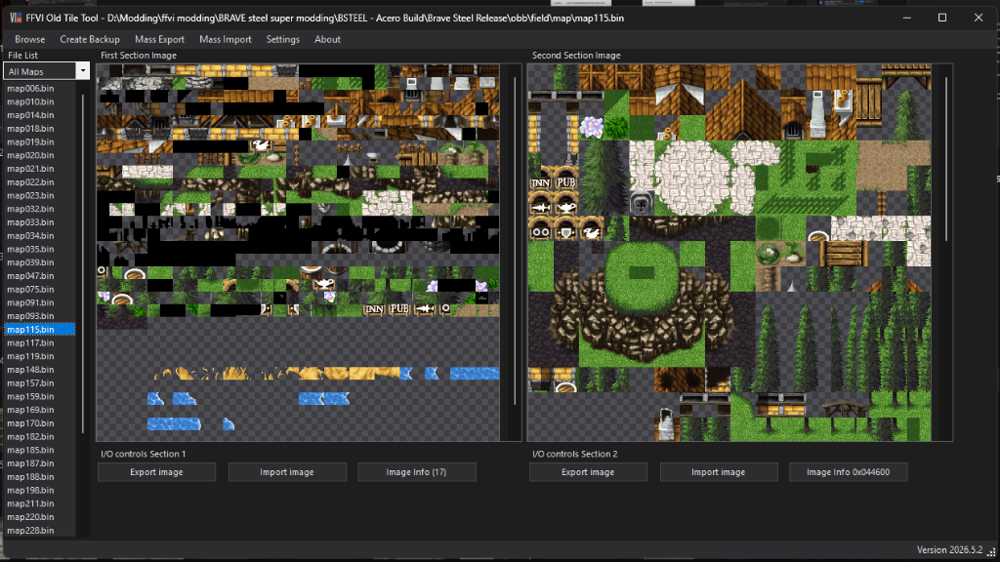

Special Projects & Flagship Suites.
While individual mod releases address specific game mechanics or visual tweaks, these Flagship Projects represent multi-month architectural undertakings. From the modern Project Kyaro Suite for PC and the classic Project Kyaro (PSX) overhaul to the Kupo-UI.PR Framework, FFVI Old Ver Mods, FFVI Old Tile Tool, Chrono Cross Mod Collection, SuiSaveEditor, and the modular Kupo Mods Library, explore the dedicated hubs below.
 Click to Zoom
Click to Zoom
The PROJECT KYARO Suite (PC)
The flagship visual remaster and modding architecture for Suikoden I & II HD Remaster on PC (Steam). Powered by the PKCore BepInEx 6 framework, it provides zero-lag native texture injection, sharp character portrait overlays, toggleable sprite smoothing, UI color theme personalization, and essential quality-of-life adjustments.
- PKCore BepInEx Framework: Native IL2CPP texture injection replacing Special K dependency with zero stutter and instant texture loading.
- High-Definition Portraits & Sprites: Faithful high-detail portrait alignments across both games with optional sprite smoothing toggles.
- QoL & UI Customization: Custom window themes, running speed options, audio polish, and complete SuikodenFix compatibility.
Kupo-UI.PR (Pixel Remaster UI Framework)
A comprehensive BepInEx IL2CPP runtime plugin for the Final Fantasy Pixel Remaster series (FF1–FF6). Eradicates tedious Unity bundle unpacking and repacking by providing a 5-layer cascading texture replacement pipeline, dynamic dialogue portrait injection, rich-text inline icons, custom typography, and data-driven GameObject manipulation.
- Zero-Bundle Texture Engine: 5-layer priority cascade with live disk hot-reload, path-based overrides for duplicate assets, and 9-slice sidecar metadata.
- Cinematic Dialogue & Portraits: Injects facial portraits directly into message windows, prepends speaker names, and remaps FF2, FF4, and FF6 menu portraits.
-
Data-Driven Hierarchy Control: Reposition, scale, resize, and restyle UI GameObjects via
ObjectConfig.jsonwithout compiling C#.
 Click to Zoom
Click to Zoom
FFVI Old Ver Mods
A flagship project featuring a massive collection of mods created over the years for the classic Steam release of Final Fantasy VI. Includes essential overhauls such as the Sane UI—the only mod right now featuring a horizontal ATB bar—and the Celes Patch restoring her original recruitment scene. In its modded state, it stands light years ahead of the Pixel Remaster with an active future and new modding tools on the way.
- Sane UI Overhaul: Banishes mobile touchscreen elements, compacts menus, and adds modern horizontal ATB gauges and custom HUD alignment.
- Celes Scene & Visual Fixes: Restores the uncut South Figaro Celes recruitment sequence, true earthen overworld tilesets, and crisp battle backgrounds.
- Opera Omnia Portraits & Clean Fonts: High-detail DFFOO-inspired character portraits and proportional, scaled-down typography.
 Click to Zoom
Click to Zoom
Chrono Cross Mod Collection
A flagship collection of 13 community mods created for Chrono Cross: The Radical Dreamers Edition. Built out of a deep love for Chrono Cross—even over Chrono Trigger—this suite spans color-corrected portraits, custom UI and window themes, PlayStation button prompts, HD world map & boat retextures, and quality-of-life enhancements, with recent developments on the modding scene opening the door to revisit these mods in the future.
- Portraits & Graphics Swaps: CC Radical Portraits Plus color corrections, Blue Mage overhaul, and Old/New Graphics Mode portrait swaps.
- UI, Menus & Prompts: Another Menu UI, Cross Window Sets, Another Eden Main Menu & Backgrounds, PlayStation Buttons Pack, and Dark Themed Launcher.
- QoL & World Retextures: Unlocks missable Level 7 tech skills, opens the Bend of Time door on first playthrough, and upgrades the Another World boat & world map.
 Click to Zoom
Click to Zoom
Project Kyaro (PSX)
A landmark visual enhancement and texture restoration project for Konami's timeless PSX masterpiece, Suikoden II. Combining xBR filtering and hardware texture replacement backends on Beetle PSX HW and RetroArch, Project Kyaro eliminates pixel artifacting on modern displays while providing pixel purists the option to run crisp Nearest Neighbor filtering.
- 161 Character Portraits: Sharp high-resolution facial portraits with custom outlines across the 108 Stars of Destiny, plus Pilika, Neclord, Jowy, and Julia.
- Internationalization & Art: Accented text support, war battle typography, ending backgrounds, and rune transparency fixes.
- Curated Cheat Database: Includes 80+ essential GameShark and Action Replay hex codes for stats, runes, and strategic war battle advantages.

Click to ZoomFFVI Old Tile Tool (ffvi_tileConverter)
A modernized desktop application for viewing, exporting, importing, and managing section graphics and indexed tiles stored in Final Fantasy VI (Old Ver.) map .bin files. Built upon Maki's original FFVI Tile Tool, this release finally resolves Section 1 reinsertion corruption, automates mirrored palette updates, and adds batch processing and tile filtering.
-
Fixed Section 1 & 2 Reinsertion: Re-injects both fixed
512×512Section 1 and variable-height Section 2 8-bit indexed images without corrupting map binaries. -
Mirrored Palette Sync & Diagnostics: Automatically detects and updates mirrored palette repetitions per
.binfile on import, with050505transparency preview. -
Mass I/O, Filters & Gzip Support: Folder-driven Mass Export/Import (PNG/BMP), built-in Snow/Grass/Magitek filters, file isolation, Dark Mode, and
.bin.gzdecompression.
 Click to Zoom
Click to Zoom
SuiSaveEditor (Suikoden II HD Save Editor)
A minimal, static web-based GUI and Progressive Web Application (PWA) for editing Suikoden II HD Remaster JSON save files decrypted by SuikodenFix or SuikodenSaveDecrypter. Runs directly in any web browser with zero runtime installations and complete client-side data privacy.
- Party, Roster & Stats: Edit 6-character active battle teams, 2 convoy slots, character levels, HP, combat attributes, and recruitment flags.
- Visual MP & Smart Runes: Unique visual MP system with filled/empty squares (■/□) plus slot-specific and character-specific rune restrictions.
- Inventories & Castle Aliases: Key event items, warehouse storage, bath items, Greenhill student aliases, and food menu presets.
 Click to Zoom
Click to Zoom
Kupo Mods Library
The master enhancement suite for Final Fantasy IX on PC. Formerly known as Mog Add-ons and detailed in Nexus Article #12, the Kupo Library provides a modular, cohesive experience spanning complete UI overhauls, 6 controller button presets (DualSense, DS4, Xbox, SNES, and Pixel), Extended Cast portraits, quality-of-life adjustments, and the Kupo Heroes Pack character balance overhaul.
- Kupo UI Suite: 8 dialogue box colorways, 3 custom title loops, high-contrast menus, and reduced world map mist.
- Kupo Heroes Pack: In-depth character reworks including Freya 3x High Jump, Vivi & Steiner multi-element Aero/Quake/Water magic, Steiner Save the Queen, Beatrix Paladin integration, and Quina chef buffs.
- Modular Freedom: Pick and choose individual components or run the entire suite together via the Memoria launcher.